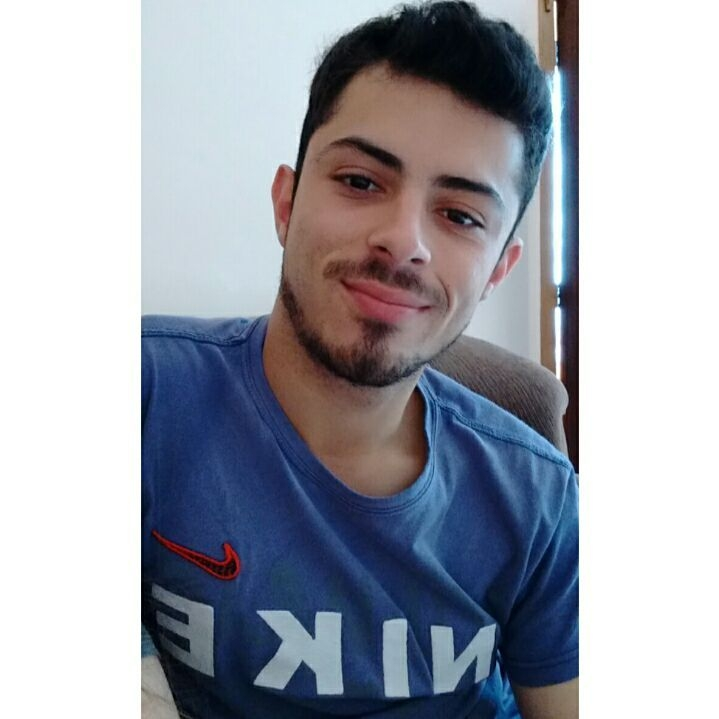

Ridick Luiz Sossela

Desenvolvedor web
Sou pós-graduado em Engenharia de software pela Universidade Estácio de Sá. Com foco em aplicações web, atuo como desenvolvedor full stack, com conhecimentos sólidos na análise, planejamento, execução e implementação de sistemas.
Estou constantemente buscando aperfeiçoar meus conhecimentos.